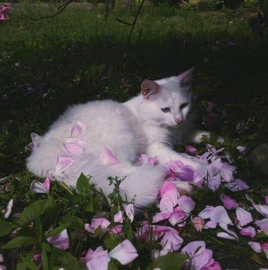
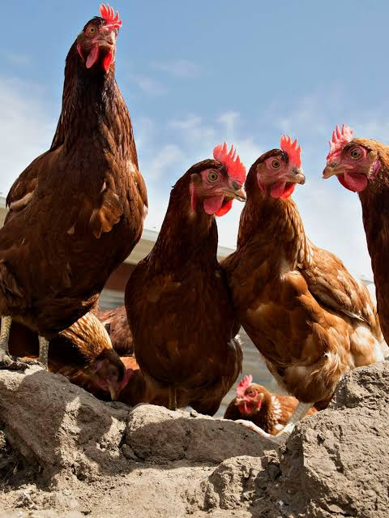
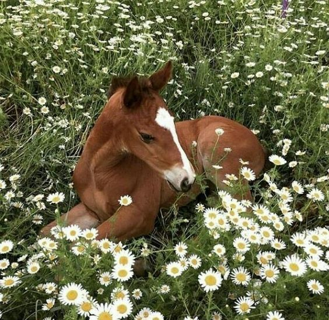

Top 1: Dogs

The dog is a domesticated descendant of the wolf. Also called the domestic dog, it is derived from extinct Pleistocene wolves, and the modern wolf is the dog's nearest living relative. The dog was the first species to be domesticated by humans.
Top 2: Cats
The cat, commonly referred to as the domestic cat or house cat, is the only domesticated species in the family Felidae. Recent advances in archaeology and genetics have shown that the domestication of the cat occurred in the Near East around 7500 BC
Top 3: Chickens
The chicken is a domesticated species that arose from the red junglefowl, originally from Southeast Asia. They have also partially hybridized with other wild species of junglefowl. Rooster and cock are terms for adult male birds, and a younger male may be called a cockerel. A male that has been castrated is a capon.
Top 4: Horses
The horse is a domesticated, one-toed, hoofed mammal. It belongs to the taxonomic family Equidae and is one of two extant subspecies of Equus ferus. The horse has evolved over the past 45 to 55 million years from a small multi-toed creature, close to Eohippus, into the large, single-toed animal of today.